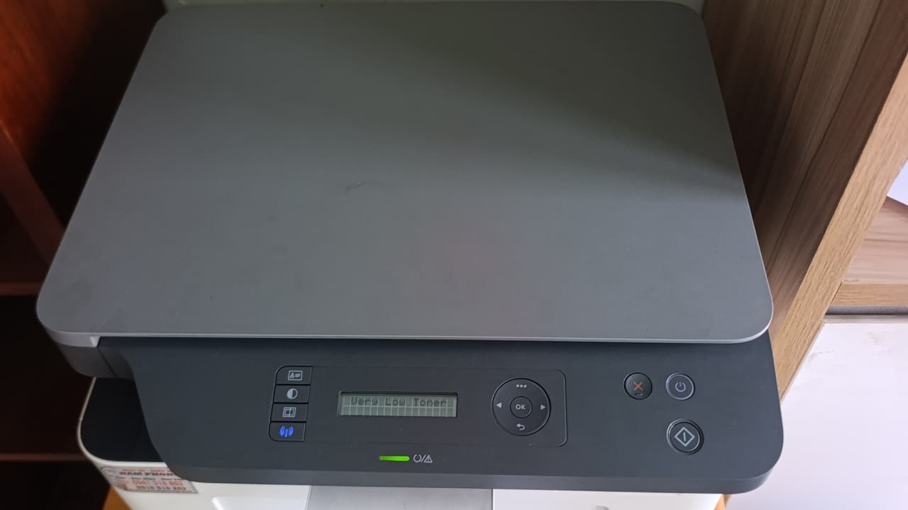

Nạp mực, bơm mực máy in Quận 5 tận nơi — khu An Đông, Chợ Lớn, phố thuốc
Cửa hàng đặt tại 5/19 Phạm Hùng. Kỹ thuật tới Quận 5 trong 25 – 40 phút — xem máy rồi báo giá, anh/chị đồng ý thì mới tháo.

Quận 5 là quận thương mại lâu đời: chợ An Đông, khu Chợ Lớn, phố thuốc đông y Hải Thượng Lãn Ông, các dãy cửa hàng sỉ trên Nguyễn Trãi và Trần Hưng Đạo. Điểm chung là bán sỉ — và bán sỉ thì phải in: phiếu xuất, bảng kê, danh sách hàng cho khách tỉnh.
Vì vậy máy in ở Quận 5 thường in từng đợt rất dày vào giờ cao điểm rồi nghỉ, thay vì in rải đều cả ngày. Kiểu dùng này làm hộp mực hết không theo chu kỳ đều, và chủ cửa hàng thường chỉ phát hiện khi đang cần in gấp cho khách.
Thông tin nhanh — Quận 5
| Thời gian tới | 25 – 40 phút |
| Nạp mực laser A4 | từ 80.000đ |
| Máy A3 / photocopy | từ 250.000đ |
| Phun mực hệ bình | từ 150.000đ |
| Giờ làm việc | 08:00 – 19:00 |
| Hoá đơn VAT | Có |
Bơm mực, nạp mực, thay mực — và mẹo để không hết mực giữa lúc đông khách
Khách Quận 5 tìm bằng "nạp mực máy in quận 5", "bơm mực máy in quận 5", "bơm mực in quận 5", "thay mực máy in quận 5", "nạp mực in quận 5". Cùng một dịch vụ, cùng giá.
Điều hữu ích hơn với cửa hàng sỉ: đừng chờ hết mực mới gọi. Khi bản in bắt đầu nhạt đi ở mép, hộp mực còn đủ cho khoảng 100–200 trang nữa. Đó là lúc đặt hẹn — chọn giờ vắng khách thay vì bị động giữa lúc đông.
Với cửa hàng in trên 1.000 trang mỗi tháng, chúng tôi khuyên giữ sẵn một hộp mực dự phòng đã nạp. Hết mực là đổi hộp trong một phút, hộp cũ chúng tôi nạp lại trong lượt ghé sau. Cách này gần như loại bỏ hoàn toàn thời gian máy dừng.
Khu vực Quận 5 nhận tận nơi
Chợ An Đông và khu vực quanh chợ
Phố thuốc đông y Hải Thượng Lãn Ông, Lương Nhữ Học
Tuyến Nguyễn Trãi, Trần Hưng Đạo, An Dương Vương
Khu Chợ Lớn, Châu Văn Liêm, Trang Tử
Nguyễn Chí Thanh, Hùng Vương — bệnh viện và phòng khám
Trường học, nhà sách, tiệm photo quanh Trần Bình Trọng
Cửa hàng sỉ và phòng khám: hai nhu cầu rất khác nhau
Cửa hàng sỉ, vựa thuốc, sạp chợ An Đông
In phiếu và bảng kê từng đợt dày. Cần nhất là không bị dừng máy giữa giờ bán. Phù hợp với cách giữ hộp mực dự phòng và hẹn nạp vào giờ vắng khách.
Phòng khám, nhà thuốc quanh Nguyễn Chí Thanh
In đơn thuốc, kết quả — số lượng vừa nhưng yêu cầu bản in rõ ràng, không được mờ hay lem vì liên quan tới liều dùng. Nhóm này chúng tôi dùng mực chuẩn và in thử kỹ hơn, kiểm cả chữ nhỏ.
Tiệm photo và nhà sách
Máy chạy khối lượng lớn liên tục, thường là máy A3 hoặc photocopy mini. Nạp mực loại này 350.000 – 550.000đ nhưng hộp dung tích lớn nên tính trên mỗi trang lại rẻ. Chúng tôi kiểm tra cả lô sấy vì máy chạy nóng lâu.
Tới trong bao lâu, tính theo từng khu của Quận 5
Số dưới đây là thời gian thật từ lúc anh/chị gác máy tới lúc kỹ thuật có mặt, đo trong giờ hành chính ngày thường.
| Khu | Thời gian tới | Ghi chú |
|---|---|---|
| An Dương Vương, Trần Bình Trọng | 20 – 30 phút | Gần ranh Quận 8, đi nhanh nhất trong quận. |
| Chợ An Đông và quanh chợ | 25 – 35 phút | Đông xe buổi sáng, trưa đi thoáng hơn. |
| Nguyễn Trãi, Trần Hưng Đạo | 25 – 35 phút | Đường một chiều, kỹ thuật đi xe máy. |
| Nguyễn Chí Thanh, Hùng Vương | 25 – 35 phút | Khu bệnh viện, khó đậu xe nên đi xe máy. |
| Hải Thượng Lãn Ông, Lương Nhữ Học | 30 – 40 phút | Phố thuốc, xe đông và hay chắn lối bốc hàng. |
| Chợ Lớn, Châu Văn Liêm, Trang Tử | 30 – 40 phút | Nhiều hẻm nhỏ thông nhau, cho thêm tên cửa hàng. |
Giờ cao điểm sáng 7–8h và chiều 17–18h cộng thêm khoảng 10 phút. Ca đặt trước thì đúng khung giờ hẹn.
In từng đợt dày: lỗi hay gặp ở cửa hàng sỉ và phòng khám Quận 5
Những lỗi dưới đây kỹ thuật mang sẵn vật tư nên xử lý xong ngay trong một lượt, không phải hẹn lại.
| Bản in bị gì | Thường là do | Xử lý tại chỗ |
|---|---|---|
| Hết mực giữa đợt in gấp cho khách | Kiểu in từng đợt dày làm chu kỳ hết mực không đều, máy báo khi đã muộn. | Nạp tại chỗ 80.000 – 120.000đ; nên giữ sẵn một hộp dự phòng để không dừng bán. |
| Bản in mờ, chữ số trên đơn khó đọc | Trục từ chai hoặc mực kém chất lượng — với đơn thuốc thì đây là lỗi không chấp nhận được. | Thay trục từ 120.000 – 180.000đ và dùng mực chuẩn, in thử trước khi rời đi. |
| Máy photocopy mini in nhoè, bẩn mép | Trống và gạt của máy A3 mòn nhanh vì khối lượng in lớn. | Nạp mực máy A3 hoặc photocopy 350.000 – 550.000đ, gồm vệ sinh cụm trống. |
| Kẹt giấy liên tục khi in bảng kê dài | Bánh kéo giấy chai vì chạy giấy mỏng số lượng lớn. | Thay bánh kéo giấy 120.000 – 200.000đ. |
| Mực lem lên bảng kê vừa in | Gạt mực mòn, hoặc giấy hút ẩm trong cửa hàng mở cửa cả ngày. | Thay gạt mực 100.000 – 150.000đ kèm hút sạch mực thải. |
| Máy báo hết mực dù hộp còn mực | Chip đã đếm hết số trang — Samsung và Fuji Xerox hay khoá. | Thay chip 80.000 – 150.000đ. |
Nói giúp mấy thứ này lúc gọi, đỡ mất một lượt đi lại
Giờ vắng khách của cửa hàng
Chúng tôi hẹn theo giờ bán của anh/chị. Cửa hàng sỉ quanh An Đông thường chọn giờ trưa hoặc cuối buổi chiều.
Tên cửa hàng và mặt hàng
Khu Chợ Lớn và phố thuốc nhiều địa chỉ trùng số. Tên tiệm và mặt hàng đang bán giúp tìm nhanh hơn cả số nhà.
Máy in thường hay máy photocopy
Hai loại khác nhau về vật tư và về giá. Chụp cái máy gửi Zalo là chúng tôi báo đúng khung giá ngay trong cuộc gọi.
Có cần hộp dự phòng không
Cửa hàng không dừng máy được thì nên có một hộp dự phòng. Kỹ thuật thay hộp cho máy chạy tiếp, mang hộp cũ về nạp rồi giao lại.
Bảng giá đầy đủ theo mã hộp mực
Giá như nhau cho cả bảy khu — chỉ thời gian tới là khác.
Máy hỏng chứ không chỉ hết mực?
Xem bảng triệu chứng – nguyên nhân để biết việc nào xử lý được ngay tại chỗ.
Câu hỏi thường gặp — khách Quận 5
Nạp mực máy in Quận 5 bao lâu thì tới?
Khoảng 25–40 phút. Quận 5 liền kề Quận 6 và Quận 8 nơi đặt cửa hàng, nên đi cùng tuyến và thường tới nhanh. Giờ cao điểm quanh chợ An Đông thì cộng thêm ít phút vì đường đông.
Cửa hàng tôi không thể dừng máy giữa giờ bán, có cách nào?
Có. Chúng tôi khuyên giữ một hộp mực dự phòng đã nạp sẵn: hết mực là đổi hộp trong một phút, hộp cũ chúng tôi nạp lại ở lượt ghé sau. Cách này phù hợp với cửa hàng in trên 1.000 trang mỗi tháng.
Máy photocopy ở tiệm photo có nạp được không?
Được. Máy photocopy mini và máy đa năng A3 nạp 350.000 – 550.000đ tuỳ model, chốt giá sau khi xem máy. Hộp dung tích lớn nên tính trên mỗi trang in rẻ hơn máy A4.
Phòng khám cần bản in rõ, không mờ — có bảo đảm không?
Có. Với phòng khám và nhà thuốc, kỹ thuật in thử kỹ hơn và kiểm cả phần chữ nhỏ trước khi rời đi. Nếu trong thời gian bảo hành bản in mờ hay lem do mực, chúng tôi quay lại xử lý miễn phí.
Nạp mực máy in Quận 5 giá bao nhiêu?
Laser A4 phổ thông 80.000 – 100.000đ, Brother và Samsung 120.000đ, máy A3 từ 250.000đ, photocopy mini và đa năng A3 350.000 – 550.000đ. Giá đã gồm công đi lại và vệ sinh buồng mực.
Nhà thuốc cần in đơn rõ ràng, mực nào bảo đảm?
Chúng tôi dùng mực nhập cho nhóm in đơn thuốc và kết quả, và in thử 5 – 10 trang trước khi rời đi để kiểm độ đậm. Bản in mờ hay lem trên đơn thuốc là chuyện liên quan tới liều dùng, không phải chuyện thẩm mỹ.
Nhà thuốc và phòng khám cần hoá đơn VAT thì sao?
Có xuất. Gửi thông tin xuất hoá đơn qua Zalo lúc đặt lịch là chúng tôi chuẩn bị sẵn cùng phiếu bảo hành.
Khu vực lân cận
Đặt nạp mực tận nơi Quận 5
Kỹ thuật tới trong 25 – 40 phút. Xem máy rồi báo giá, anh/chị đồng ý mới tháo.